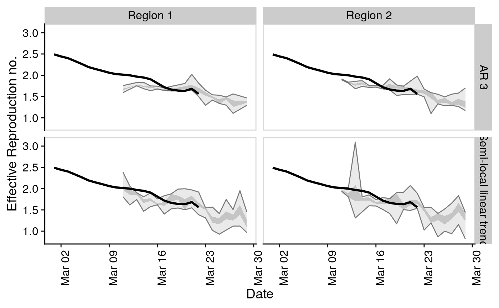
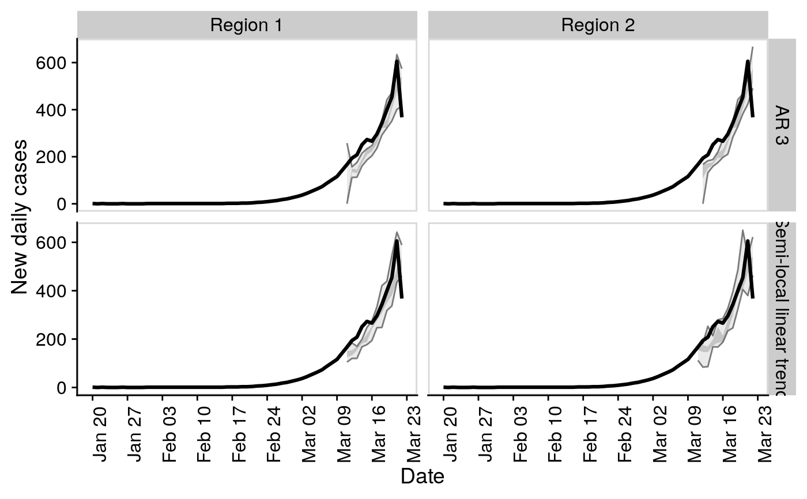

compare_timeseries.RdCompare timeseries and forecast models
compare_timeseries( obs_rts = NULL, obs_cases = NULL, models = NULL, horizon = 7, samples = 1000, bound_rt = TRUE, min_points = 3, timeout = 30, serial_interval = NULL, rdist = NULL )
| obs_rts | A dataframe of observed Rts including a |
|---|---|
| obs_cases | A dataframe of observed cases including a |
| models | A list of |
| horizon | Numeric, the time horizon over which to predict |
| samples | Numeric, the number of samples to from the posterior of the model fit. Note that twice this number of MCMC steps will be taken with half used as burn in. |
| bound_rt | Logical, defaults to |
| min_points | Numeric, defaults to 3. The minimum number of time points at which to begin iteratively evaluating the forecast. |
| timeout | Numeric, the number of seconds to allow before terminating model fitting. Defaults to 30 seconds. |
A list of dataframes as produced by evaluate model but with an additional model column.
## Example data obs_rts <- EpiSoon::example_obs_rts %>% dplyr::mutate(timeseries = "Region 1") %>% dplyr::bind_rows(EpiSoon::example_obs_rts %>% dplyr::mutate(timeseries = "Region 2")) obs_cases <- EpiSoon::example_obs_cases %>% dplyr::mutate(timeseries = "Region 1") %>% dplyr::bind_rows(EpiSoon::example_obs_cases %>% dplyr::mutate(timeseries = "Region 2")) ## List of forecasting bsts models wrapped in functions. models <- list("AR 3" = function(ss, y){bsts::AddAr(ss, y = y, lags = 3)}, "Semi-local linear trend" = function(ss, y){bsts::AddSemilocalLinearTrend(ss, y = y)}) ## Compare models evaluations <- compare_timeseries(obs_rts, obs_cases, models, horizon = 7, samples = 10, serial_interval = EpiSoon::example_serial_interval) evaluations#> $forecast_rts #> # A tibble: 525 x 12 #> timeseries model forecast_date date horizon median mean sd bottom #> <chr> <chr> <chr> <date> <int> <dbl> <dbl> <dbl> <dbl> #> 1 Region 1 AR 3 2020-03-04 2020-03-05 1 1.98 1.85 0.801 0 #> 2 Region 1 AR 3 2020-03-04 2020-03-06 2 1.14 1.40 0.901 0 #> 3 Region 1 AR 3 2020-03-04 2020-03-07 3 1.46 1.43 0.982 0 #> 4 Region 1 AR 3 2020-03-04 2020-03-08 4 1.56 1.32 0.893 0 #> 5 Region 1 AR 3 2020-03-04 2020-03-09 5 1.16 1.39 1.18 0 #> 6 Region 1 AR 3 2020-03-04 2020-03-10 6 0.733 1.06 1.02 0 #> 7 Region 1 AR 3 2020-03-04 2020-03-11 7 0.742 1.27 1.50 0 #> 8 Region 1 AR 3 2020-03-05 2020-03-06 1 2.17 2.17 0.0340 2.11 #> 9 Region 1 AR 3 2020-03-05 2020-03-07 2 2.09 2.09 0.0242 2.05 #> 10 Region 1 AR 3 2020-03-05 2020-03-08 3 2.00 2.00 0.0243 1.96 #> # … with 515 more rows, and 3 more variables: lower <dbl>, upper <dbl>, #> # top <dbl> #> #> $rt_scores #> # A tibble: 413 x 10 #> timeseries model forecast_date date horizon dss crps logs bias #> <chr> <chr> <chr> <date> <int> <dbl> <dbl> <dbl> <dbl> #> 1 Region 1 AR 3 2020-03-04 2020-03-05 1 -0.242 0.192 0.499 0.4 #> 2 Region 1 AR 3 2020-03-04 2020-03-06 2 0.535 0.512 1.34 0.3 #> 3 Region 1 AR 3 2020-03-04 2020-03-07 3 0.443 0.455 1.30 0.200 #> 4 Region 1 AR 3 2020-03-04 2020-03-08 4 0.524 0.442 1.09 0.200 #> 5 Region 1 AR 3 2020-03-04 2020-03-09 5 0.579 0.494 1.54 0.3 #> 6 Region 1 AR 3 2020-03-04 2020-03-10 6 0.940 0.714 1.77 0.200 #> 7 Region 1 AR 3 2020-03-04 2020-03-11 7 0.979 0.815 2.04 0.3 #> 8 Region 1 AR 3 2020-03-05 2020-03-06 1 -6.38 0.0136 -2.18 0.3 #> 9 Region 1 AR 3 2020-03-05 2020-03-07 2 -1.67 0.0431 -0.698 0 #> 10 Region 1 AR 3 2020-03-05 2020-03-08 3 12.5 0.0904 7.98 0 #> # … with 403 more rows, and 1 more variable: sharpness <dbl> #> #> $forecast_cases #> # A tibble: 413 x 12 #> timeseries model forecast_date date horizon median mean sd bottom #> <chr> <chr> <chr> <date> <int> <dbl> <dbl> <dbl> <dbl> #> 1 Region 1 AR 3 2020-03-04 2020-03-05 1 52 45.1 20.0 0 #> 2 Region 1 AR 3 2020-03-04 2020-03-06 2 40.5 40.5 25.0 0 #> 3 Region 1 AR 3 2020-03-04 2020-03-07 3 53.5 53.4 36.5 0 #> 4 Region 1 AR 3 2020-03-04 2020-03-08 4 60.5 54.5 39.5 0 #> 5 Region 1 AR 3 2020-03-04 2020-03-09 5 39 60.6 60.8 0 #> 6 Region 1 AR 3 2020-03-04 2020-03-10 6 27.5 56.3 65.9 0 #> 7 Region 1 AR 3 2020-03-04 2020-03-11 7 24 79.3 104. 0 #> 8 Region 1 AR 3 2020-03-05 2020-03-06 1 66 65.5 8.34 52 #> 9 Region 1 AR 3 2020-03-05 2020-03-07 2 81 80.9 9.75 65 #> 10 Region 1 AR 3 2020-03-05 2020-03-08 3 97 95.2 4.32 86 #> # … with 403 more rows, and 3 more variables: lower <dbl>, upper <dbl>, #> # top <dbl> #> #> $case_scores #> # A tibble: 413 x 11 #> timeseries model sample forecast_date date horizon dss crps logs #> <chr> <chr> <chr> <chr> <date> <int> <dbl> <dbl> <dbl> #> 1 Region 1 AR 3 1 2020-03-04 2020-03-05 1 6.78 9.09 4.02 #> 2 Region 1 AR 3 1 2020-03-04 2020-03-06 2 8.21 21.0 4.89 #> 3 Region 1 AR 3 1 2020-03-04 2020-03-07 3 8.09 22.6 5.09 #> 4 Region 1 AR 3 1 2020-03-04 2020-03-08 4 8.85 30.2 5.21 #> 5 Region 1 AR 3 1 2020-03-04 2020-03-09 5 9.03 42.0 5.88 #> 6 Region 1 AR 3 1 2020-03-04 2020-03-10 6 10.1 63.1 6.02 #> 7 Region 1 AR 3 1 2020-03-04 2020-03-11 7 9.97 71.6 6.39 #> 8 Region 1 AR 3 1 2020-03-05 2020-03-06 1 5.04 4.37 3.44 #> 9 Region 1 AR 3 1 2020-03-05 2020-03-07 2 5.04 3.55 3.41 #> 10 Region 1 AR 3 1 2020-03-05 2020-03-08 3 5.58 4.62 3.63 #> # … with 403 more rows, and 2 more variables: bias <dbl>, sharpness <dbl> #> #> $raw_rt_forecast #> # A tibble: 5,250 x 8 #> timeseries model obs_sample forecast_date sample date rt horizon #> <chr> <chr> <chr> <chr> <int> <date> <dbl> <int> #> 1 Region 1 AR 3 1 2020-03-04 1 2020-03-05 1.84 1 #> 2 Region 1 AR 3 1 2020-03-04 2 2020-03-05 1.87 1 #> 3 Region 1 AR 3 1 2020-03-04 3 2020-03-05 2.29 1 #> 4 Region 1 AR 3 1 2020-03-04 4 2020-03-05 2.79 1 #> 5 Region 1 AR 3 1 2020-03-04 5 2020-03-05 1.63 1 #> 6 Region 1 AR 3 1 2020-03-04 6 2020-03-05 2.48 1 #> 7 Region 1 AR 3 1 2020-03-04 7 2020-03-05 1.12 1 #> 8 Region 1 AR 3 1 2020-03-04 8 2020-03-05 2.35 1 #> 9 Region 1 AR 3 1 2020-03-04 9 2020-03-05 2.08 1 #> 10 Region 1 AR 3 1 2020-03-04 10 2020-03-05 0 1 #> # … with 5,240 more rows #> #> $raw_case_forecast #> # A tibble: 4,130 x 8 #> timeseries model obs_sample forecast_date sample date cases horizon #> <chr> <chr> <chr> <chr> <dbl> <date> <int> <int> #> 1 Region 1 AR 3 1 2020-03-04 1 2020-03-05 39 1 #> 2 Region 1 AR 3 1 2020-03-04 1 2020-03-06 23 2 #> 3 Region 1 AR 3 1 2020-03-04 1 2020-03-07 47 3 #> 4 Region 1 AR 3 1 2020-03-04 1 2020-03-08 22 4 #> 5 Region 1 AR 3 1 2020-03-04 1 2020-03-09 25 5 #> 6 Region 1 AR 3 1 2020-03-04 1 2020-03-10 11 6 #> 7 Region 1 AR 3 1 2020-03-04 1 2020-03-11 21 7 #> 8 Region 1 AR 3 1 2020-03-04 2 2020-03-05 52 1 #> 9 Region 1 AR 3 1 2020-03-04 2 2020-03-06 45 2 #> 10 Region 1 AR 3 1 2020-03-04 2 2020-03-07 60 3 #> # … with 4,120 more rows #>## Example evaluation plot for comparing forecasts ## with actuals for a range of models and timeseries. plot_forecast_evaluation(evaluations$forecast_rts, obs_rts, c(7)) + ggplot2::facet_grid(model ~ timeseries) + cowplot::panel_border()## Hack to plot observed cases vs predicted plot_forecast_evaluation(evaluations$forecast_cases, obs_cases, c(7)) + ggplot2::facet_grid(model ~ timeseries, scales = "free") + cowplot::panel_border()